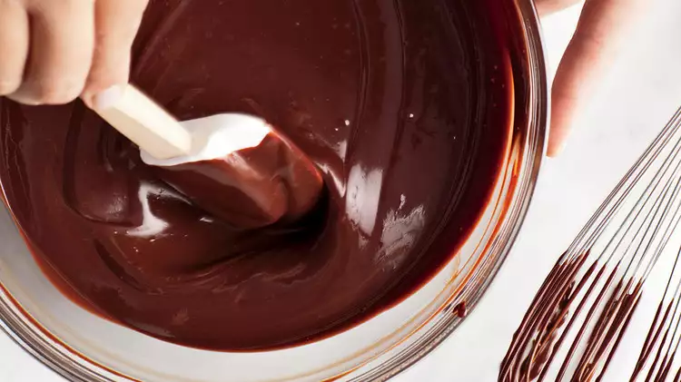

Ganache

The PerfectGanache
Making ganache is easy. And it should be something you can do without a recipe, right? It's just equal parts chocolate and cream.
Yes, and no. You can make a simple ganache or you can make an elevated ganache. This recipe is the elevated version
Ingredients
- 1 lb. Semi Sweet Chocolate, finely chopped
- 2 TBSP Granulated Sugar
- 1 1/2 cups Heavy Whipping Cream
- 1 oz Unsalted Butter
Steps
- Heat cream and sugar together until is just comes to a boil. DO NOT BOIL
- Add the chopped chocolate and butter to the cream mixture, using a whisk, mix until it is completely melted
- Allow to cool uncovered
- Try not to eat it all in one sitting
Home